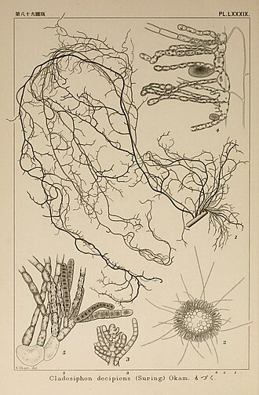

もずくの生産量 都道府県ランキング
1位から3位までと、とれた量
もずくが日本でいちばん多く育てられているのは沖縄県です。1万7,181 tで、全国（1万7,232 t）の100%を占めます。

| 順位 | 都道府県 | 収獲量 | 全国に占める割合 |
|---|---|---|---|
| 1位 | 沖縄県 | 1万7,181 t | 100% |
| 2位 | 鹿児島県 | 46 t | 0.3% |
| 3位 | 福岡県 | 4 t | 0.0% |
この数字について
- 分類：海藻の仲間
- 全国の収獲量：1万7,232 t
- この数字が表すもの：収獲量（養殖で育てて取り上げた重さ）
- 調査：海面漁業生産統計調査（海面養殖業） 令和6年
- この品目は養殖の統計です。
- 4県分を調査（調査していない県は順位に入りません）
もずくの生産量について、よくある質問
- もずくの生産量が日本一の都道府県はどこですか？
- 沖縄県です。海面漁業生産統計調査（海面養殖業）（令和6年）で1万7,181 tでした。
- もずくの生産量ランキング2位・3位はどこですか？
- 2位は鹿児島県（46 t）、3位は福岡県（4 t）です。
- もずくの全国の生産量はどれくらいですか？
- 1万7,232 t（令和6年）です。